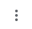

Una página web es un documento de texto con marcas y guardado con el juego de caracteres UTF-8. Las marcas permiten categorizar los fragmentos de texto, incluir elementos no contenidos en el texto (por ejemplo, imágenes), crear hiperenlaces, añadir significado al texto (todavía de forma limitada), etc. A las marcas se les llaman también etiquetas.
Las páginas web están pensadas para ser vistas mediante los programas llamados navegadores web. Los navegadores son capaces de interpretar las marcas y presentar el documento tal y como lo diseñó el autor.
Documento de texto con marcas
<p>Esto es un párrafo de texto.</p>
<p>Esto es otro párrafo.</p>
Cómo se ve en el navegador
En principio, los navegadores no muestran las marcas, aunque podemos pedirle al navegador que nos muestre el documento original. Podemos hacer clic derecho en una zona sin texto ni imágenes de la página y elegir la opción "Ver el código fuente de la página". Podemos usar el atajo de teclado Ctrl+u, que abre directamente una pestaña con el código fuente. También se pueden utilizar las siguientes opciones de menú:
En Firefox,
Menú clásico: Pulse la tecla Alt y, en el menú que se muestra en la parte superior del navegador, elija la opción Herramientas > Herramientas del navegador > Código fuente de la página.
Menú moderno: Pulse el botón "hamburguesa" , situado en la parte superior derecha de Firefox y elija la opción Más herramientas > Código fuente de la página.
En Chrome, pulse el botón "3 puntos" , situado en la parte superior derecha de Chrome, Más herramientas > Herramientas para desarrolladores > Sources / Fuentes.
Nota: La expresión "código fuente" pertenece al ámbito de la programación. En programación, el "código fuente" es el documento de texto que escribe el programador en algún lenguaje de programación y que algún programa especializado (compilador o intérprete) convierte en "código máquina" que el procesador del ordenador ya puede ejecutar. En el caso de las páginas web, el texto con marcas no es realmente un "código fuente" en ese sentido, puesto que el HTML no es un lenguaje de programación (CSS tampoco lo es), pero se utiliza el término en el sentido de que el documento de texto escrito por el autor es convertido en una representación gráfica, con formato e imágenes.
Etiquetas
Las etiquetas se escriben entre desigualdades (<p>, <h1>, <div>, etc.) y suelen ir por parejas, rodeando porciones de texto. La marca de apertura contiene como mínimo el nombre de la marca y la marca de cierre empieza por el carácter barra (/) y contiene únicamente el nombre de la marca (</p>, </h1>, </div>, etc.).
<p>Esto es un párrafo de texto.</p>
<p>Esto es otro párrafo.</p>
Algunas marcas (imágenes, saltos de líneas, separadores, etc.) no necesitan marca de cierre y sólo es necesario escribir la marca de apertura. A estas marcas se las llama marcas vacías (void). Las marcas vacías de HTML son <area>, <base>, <br>, <col>, <embed>, <hr>, <img>, <input>, <link>, <meta>, <param>, <source>, <track> y <wbr>.
<p>Esto es un párrafo de texto.</p>
<hr>
<p>Esto es otro párrafo. Entre los dos párrafos hay una línea horizontal.</p>
Las etiquetas vacías no deben cerrase.
<hr></hr>
En general, los navegadores modifican el aspecto visual del texto en función de las marcas existentes, aunque hay marcas que no tienen ningún estilo predeterminado asociado.
<p>Esto es un <strong>párrafo de texto</strong>.</p>
<p>Esto es <span>otro párrafo</span>.</p>
Los saltos de línea, espacios en blanco y tabuladores no son en general significativos. Es decir, el navegador no tiene en cuenta los saltos de línea ni la cantidad de espacios en blanco ni los tabuladores a la hora de mostrar la página web, simplemente los convierten en un espacio en blanco.
<p>Uno Dos Tres Cuatro</p>
<p>Uno
Dos
Tres
Cuatro</p>
Nota: La etiqueta <pre> es la única etiqueta que de forma predeterminada sí que se respeta los saltos de línea, espacios en blanco y tabuladores. Este comportamiento se puede modificar para cualquier etiqueta con la propiedad white-space.
Las marcas pueden anidarse, aunque no de cualquier manera. Algunas marcas pueden estar contenidas por otras, pero no se puede insertar cualquier marca dentro de otra.
<div>
<p>Esto es un <strong>párrafo de texto</strong>.</p>
<p>Esto es <em>otro párrafo</em>.</p>
</div>
<p><p>No es correcto anidar dos etiquetas de párrafo.</p></p>
Atributos
Las marcas de apertura pueden contener uno o varios atributos. Los atributos especifican alguna característica de la marca. Algunos atributos pueden incluirse en casi todas las marcas, pero otros son específicos de cada marca. Los atributos pueden a su vez tener valores (uno o varios valores, separados por espacios). <etiqueta atributo="valor_de_atributo"atributo2="valor_de_atributo2">
<p title="¡Sorpresa!">Esto es un párrafo de texto (ponga el cursor encima).</p>
<p style="color: red">Esto es otro párrafo.</p>
Los atributos no deben repetirse.
<p title="¡Hola!" title="¡Adios!">Esto es un párrafo de texto (ponga el cursor encima).</p>
Comentarios
Una página web puede contener comentarios, que el navegador no muestra (salvo cuando muestra el código fuente de la página). La etiqueta de comentario es <!-- .... -->.
Los comentarios pueden estar insertados en cualquier lugar de la página web. En el ejemplo pueden verse dos comentarios, uno incluido en una etiqueta (párrafo <p>) y otro no incluido en ninguna etiqueta.
<p>Esto es un párrafo <p> normal y corriente.
<!--Esto es un ejemplo de comentario-->
</p>
<p>En el párrafo anterior hay un comentario que sólo puede verse en el código fuente.</p>
<!--Esto es otro comentario-->